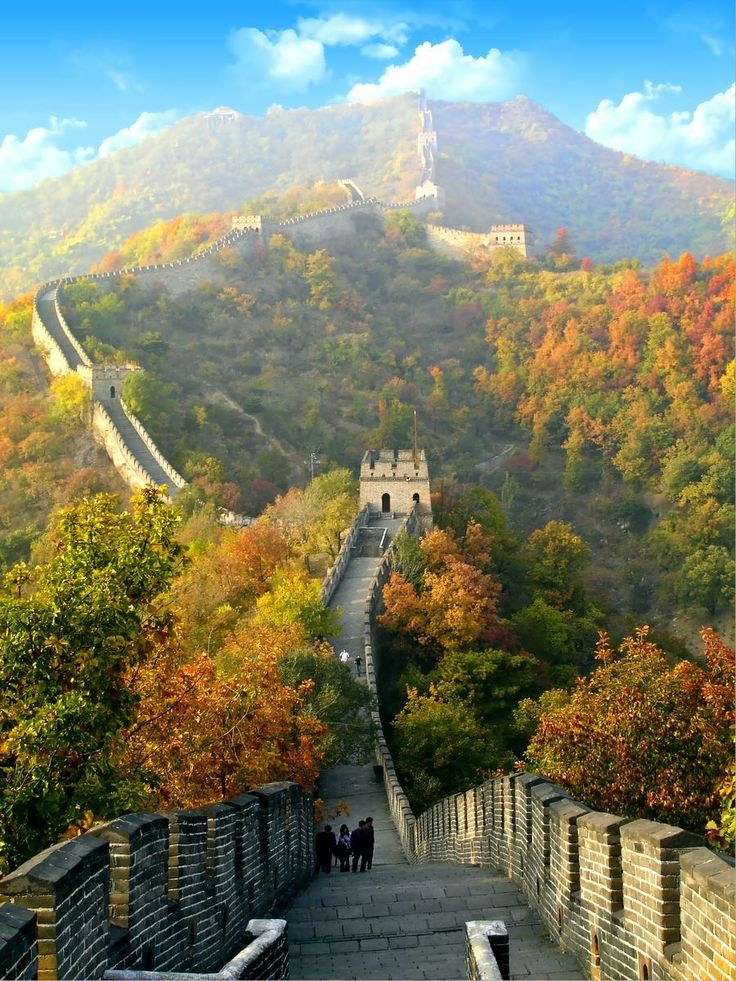
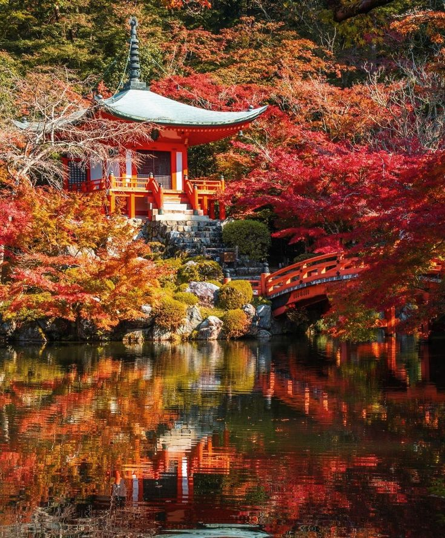

China in Fall
Discover the beauty of China during the autumn season!
Information collected by TerraVita's team

Beijing
Explore the historical landmarks and vibrant culture of China's capital city.
- Activities: Visit the Great Wall, Forbidden City, and Summer Palace.
- Highlights: Autumn foliage at the Summer Palace, traditional markets, and local cuisine.

Xi'an
Step back in time and discover the ancient city of Xi'an.
- Activities: Visit the Terracotta Warriors, Ancient City Wall, and Big Wild Goose Pagoda.
- Highlights: Autumn colors in the city's parks, ancient architecture, and local food.
Zhangjiajie
Marvel at the stunning landscapes of this UNESCO World Heritage Site.
- Activities: Hiking, visiting the Glass Bridge, exploring Avatar Mountain.
- Highlights: Breathtaking views, autumn colors in the forest, and unique geological formations.

Hangzhou
Relax by the West Lake and enjoy the tranquil atmosphere of Hangzhou.
- Activities: Boating on West Lake, tea picking, and visiting temples.
- Highlights: Autumn foliage at West Lake, tea plantations, and beautiful pagodas.